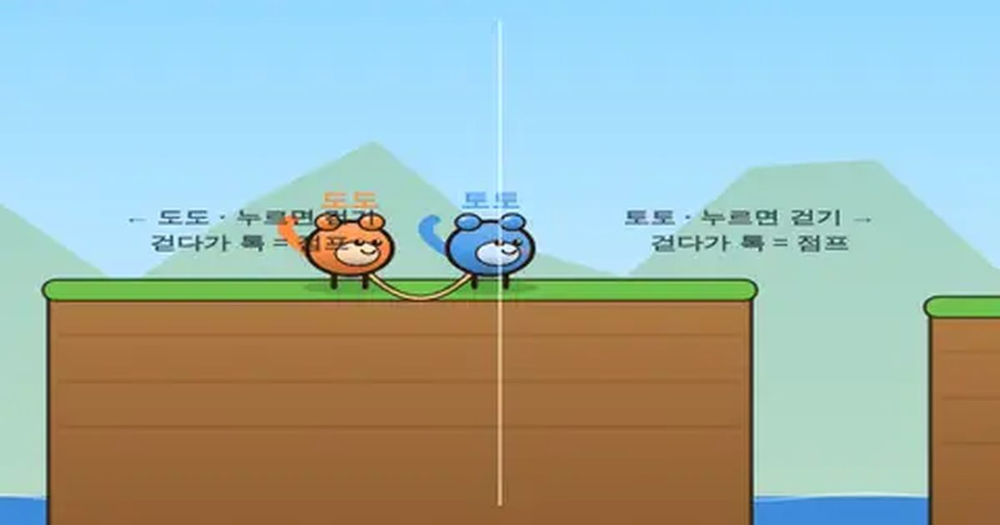

단짝 줄넘기
Buddy Jump Rope
협동 · 혼자 두 손 / 둘이서무료설치 없음폰 · PC
▶ 지금 바로 하기로그인 없이 브라우저에서 바로 시작돼요
어떤 게임인가요?
한 줄로 묶인 도도와 토토! 왼쪽 화면은 도도, 오른쪽 화면은 토토. 혼자 두 손으로, 또는 친구와 한 폰으로 호흡을 맞춰 절벽을 건너요. 떨어진 친구는 버티고 서서 끌어올리세요.
목표 · 한 줄로 묶인 도도와 토토를 함께 깃발까지! 8단계를 건너면 완주.
이렇게도 찾아요
줄넘기줄넘기 게임협동 게임둘이서 줄넘기jump roperope skipping gameco-op game
#줄넘기 #협동게임 #2인용게임
게임 방법
- 왼쪽 화면 = 도도, 오른쪽 화면 = 토토. 혼자라면 두 엄지로, 둘이라면 한 폰을 나눠 잡아요.
- 누르고 있으면 앞으로 걷고, 톡 치면 점프. 누른 채 왼쪽으로 끌면 뒤로 걸어요.
- 줄은 일정 길이 이상 늘어나지 않아요. 절벽 너머로 먼저 뛴 친구가 떨어지면 줄에 매달려요.
- 매달린 친구는 누르고 있으면 줄을 타고 올라와요(영차!). 매달린 채 톡 치면 흔들어 뛰어올라요.
- 가만히 선 쪽은 단단히 버티지만, 걷고 있으면 같이 끌려가요. 둘 다 물에 빠지면 목숨 1개가 줄어요.
- 4단계부터 위아래로 움직이는 발판이 나와요. 빨리 도착할수록 별과 점수가 많아요.
등장하는 것들
- 도도 · 왼쪽 화면 · 주황
- 토토 · 오른쪽 화면 · 파랑
- 줄 · 팽팽하면 빨갛게 변해요
- 움직이는 발판 · 노란 점이 있어요
 색감 테스트
색감 테스트 공기놀이
공기놀이 무당벌레 미로
무당벌레 미로 무당벌레 꽃밭
무당벌레 꽃밭 씽씽 카트
씽씽 카트 과일 합치기
과일 합치기